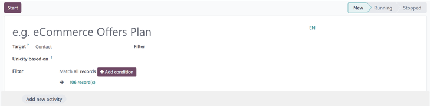
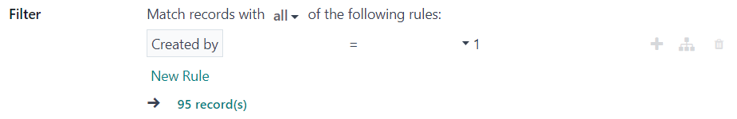
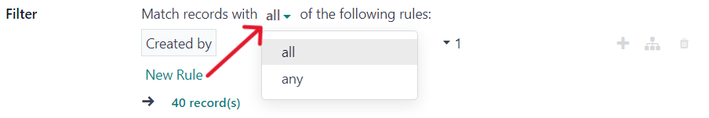
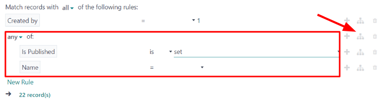

Campañas de automatización de marketing¶
La aplicación Automatización de marketing automatiza varias tareas al combinar reglas y filtros específicos para generar acciones planificadas. En lugar de crear cada etapa de la campaña (como una serie de correos masivos planificados), la aplicación Automatización de marketing le permite a los empleados de marketing crear una campaña completa con todas sus etapas en un solo lugar y en un solo tablero.
Configuración de campañas¶
Para crear una nueva campaña de marketing automatizada, vaya a para abrir un formulario en blanco para una campaña.
Después de escribir el nombre para la campaña de marketing, configure su audiencia objetivo en los campos restantes.
Puede configurar su audiencia objetivo si escribe criterios específicos para que Odoo los tenga en cuenta al momento de determinar a quien va dirigida esa campaña de automatización de marketing.
En el campo Objetivo, use el menú desplegable para elegir sobre qué modelo deberán basarse los filtros de la audiencia objetivo (por ejemplo, contacto, lead/oportunidad, :guilabel:`orden de ventas, etc.)
Seleccione Buscar más… en el menú desplegable para abrir una ventana emergente de Buscar: objetivo, la cual contiene todas las opciones disponibles de objetivos.
Una vez seleccionado un objetivo, verá el campo Unicidad basada en, el cual se usa para evitar duplicados según el modelo que eligió en el campo Objetivo.
Example
Si elige Clientes como su objetivo, seleccione el Correo electrónico en el campo Unicidad basada en para que Odoo solo procese un registro por cada dirección de correo electrónico del cliente.
Selecciona Buscar más… desde el menú desplegable Unicidad basada en para mostrar todas las opciones disponibles en una ventana emergente.
Lo último en el formulario de la campaña, es el campo de Filtro. Aquí es donde puede seleccionar por capas las opciones de objetivo más específicas en la campaña, y así reducir el número y tipo de destinatarios que reciben el material de la automatización de marketing.
Si lo deja vacío, el campo Filtro aparecerá como: Conciliar todos los registros. Esto significa que Odoo usará los campos Objetivo y Unicidad basada en para determinar quiénes serán los destinatarios. El número de destinatarios está representados debajo como registro(s).
Reglas para los filtros de las campañas¶
Para agregar un filtro más específico a una campaña de automatización de marketing, haga clic en el botón Agregar una condición en el campo Filtro. Al hacerlo, aparecerán varios campos configurables para las reglas de filtros.
En los campos de las reglas, puede configurar ecuaciones personalizables que use Odoo al momento de filtrar a quién incluir o excluir de esta campaña de marketing específica.
Nota
Los registros se refieren a los contactos en el sistema que encajan con los criterios específicos de una campaña.
También, una vez que hace clic en Agregar una condición, aparecerá como disponible la opción para Guardar como favorito en el formulario de la campaña.
También tendrá la opción de conciliar los registros con todas o cualquiera de las reglas configuradas en el campo Filtro.
Para elegir una de esas opciones, haga clic en todas en medio de la oración «Conciliar los registros con todas las siguientes reglas» para abrir un menú desplegable con estas opciones.
Cuando haga clic en el primer campo de la ecuación de la regla, aparecerá un menú desplegable donde deberá elegir criterios específicos según las necesidades de la campaña.
Los campos restantes en la ecuación de la regla definirán los criterios después, lo que se usa para determinar qué registros de la base de datos se incluyen o se excluyen en el lanzamiento de la campaña.
Para agregar otra regla, haga clic en el icono de ➕ (signo de más) que se encuentra a la derecha de la regla de filtroso haga clic en Nueva regla debajo de los campos de ecuación de la regla. Al hacer clic en cualquiera de las dos opciones, aparecerán varios campos nuevos de reglas.
Para agregar una rama de varias reglas al mismo tiempo, haga clic en el icono de rama que se ubica al lado derecho del icono ➕ (signo de más). Al hacer clic sobre él, aparecerán dos campos adicionales de ecuación de sub-reglas debajo de la regla inicial.
También tiene la opción de aplicar el filtro de cualquiera o todos de las reglas configuradas de la rama.
Para obtener más información acerca de la configuración de los filtros de la automatización de marketing, consulte esta documentaión.